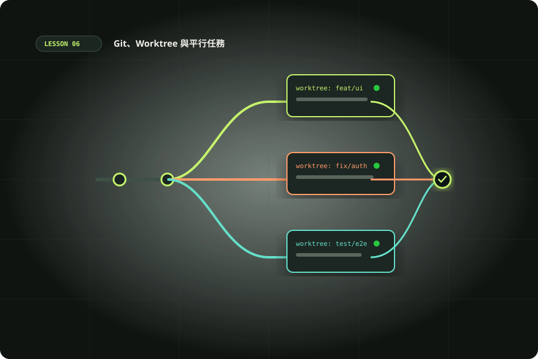

UNIT 06 · 120 MINUTES
Git、Worktree 與平行任務
學習目標：在 Codex 開始動手前建立可回復的檢查點；理解同一工作目錄、分支與 Git worktree 的差別；安全地平行處理互不衝突的任務。

單元 06 核心圖解：Git、Worktree 與平行任務素材庫 ↗
120 分鐘安排
10 分Git 狀態巡檢
20 分檢查點策略
20 分工作目錄隔離
40 分平行任務演練
20 分衝突與合併
10 分整理工作區
本單元計時00:00:00
GIT BASELINE
動手前的三個安全檢查
Working tree
先查看未提交修改，辨認哪些是你的工作，不要讓 Codex 覆寫。
Branch
確認目前分支和任務目的；不同功能最好各有清楚的變更集合。
Checkpoint
需要時先 commit、stash 或建立可回復副本。不要假設 agent 能替你保留原始狀態。
Git vocabulary：Branch（分支）是一條提交歷史；Worktree（工作樹）是在不同目錄檢出另一個分支。它們讓檔案工作目錄隔離，但共享同一個 Git repository。
SCENARIO / PARALLEL BUG FIXES
案例：一次處理三個獨立問題
團隊想同時處理：A 修正日期格式、B 更新 README、C 將搜尋元件加鍵盤操作。A 和 C 可能碰同一個元件；B 幾乎不碰程式碼。
先依檔案重疊和相依性拆分，不是每件事都該平行。安全並行候選
B 文件更新與 A 日期邏輯可能分開。獨立 worktree 能隔離兩邊的檔案和 diff。
先不要並行
A、C 可能改同一元件，且 C 可能依賴日期顯示結果。先排出依賴或定義清楚的接口。
ISOLATION CHOOSER
什麼時候開新的 worktree？
使用情境：單一任務、連續修改同一模組、需要直接承接當前未提交工作。先確認工作目錄乾淨程度，避免不小心混入其他變更。
LAB / 40 MIN
實作：把文件工作與程式工作隔離
- 用 Git 檢查 repo 狀態，確認自己沒有未保存的工作。
- 開一個 worktree 執行 README 文件更新；在另一個獨立工作區檢查小型程式修改。
- 兩個任務都要求 Codex 限定工作範圍，完成後各自檢查 diff 和驗證。
- 比較是否有檔案重疊、生成檔案衝突或套件 lockfile 變動。
- 選擇合併其中一個變更，再檢查整體狀態；移除已不需要的 worktree。
不要把「平行」誤認為「沒有協調成本」。同一份文件、同一個介面或互相依賴的 API 變更多半需要先協調。
常見事故與恢復思路
看見不認得的修改
先停止。用 Git diff / status 找來源，不要讓另一個任務接著覆寫。
兩份工作改同一檔
比較哪一份含正確行為，逐段合併；再跑兩邊相關測試。
套用變更後測試壞掉
先確認基線和衝突，檢查整合後的行為，不要只看每個分支單獨成功。
忘記 worktree 在哪
用 Git worktree list 查看清單；確認沒有未保存工作後再移除。
判斷：兩個 agent 都要重構同一個共用會員元件，但工作內容不同。首選直接平行修改嗎？